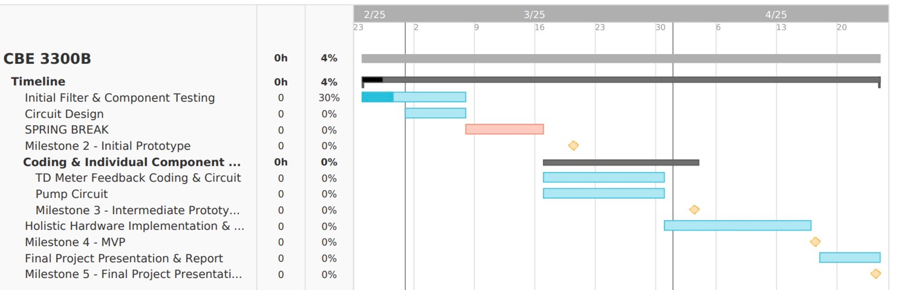
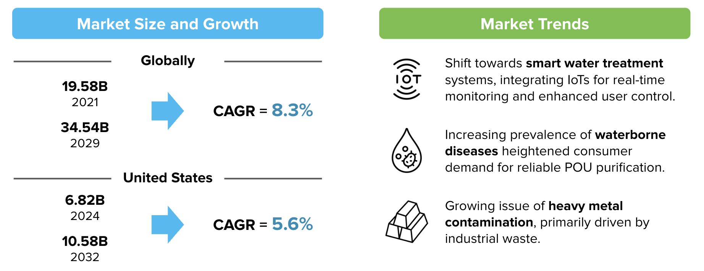
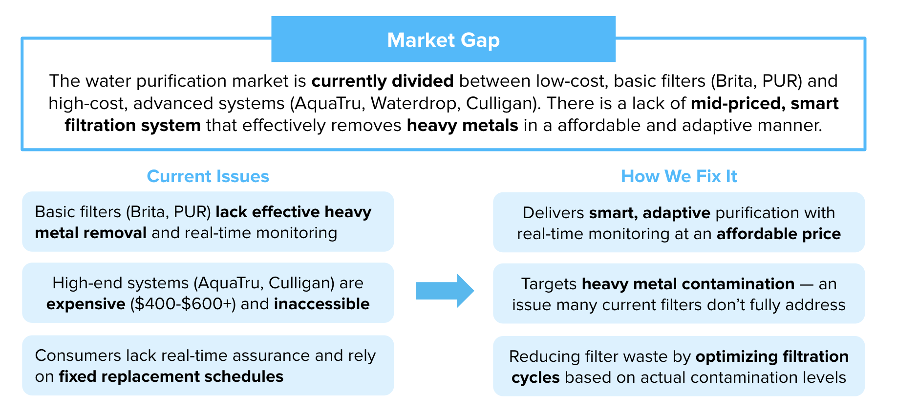

Opted for 100 micron for a greater flow rate, but can consider 30 micron if a lower flow rate is needed in the future.
To estimate pump flow, further testing is needed with a consistent pressure overhead water to ensure accurate results (hydrostatics).
1.3 Peristaltic Pump Calculations
Assumptions:
No bugs will lead to water accumulation.
Future iterations can adjust PWM signal based on flow rates:
If Qpump > Qmesh, reduce PWM signal to slow down pump.
If Qpump < Qmesh, increase PWM signal to slow down pump.
Using the equation: P = P0 + ρgh (assuming constant volume/height of water overhead the filter),
Constant pressure above the mesh ensures a steady flow rate.
Can match the pump flow rate to that of the exiting water.
Ensured pump can overcome pressure drop → initial design will have openings to the atmosphere in both chambers. Future iterations can consider closed system options.
Once TDS meter signal matches that of standard, turn off peristaltic pump
2. GANTT Chart

Figure 1: GANTT chart
3. Water Purifier Market
The global point-of-use (POU) water treatment systems market is experiencing significant growth, driven by increasing concerns over water quality and the need for accessible purification solutions.
3.1 Market Trends
Shift towards smart water treatment systems, integrating IoTs for real-time monitoring and enhanced user control.
Increasing prevalence of waterborne diseases heightened consumer demand for reliable POU purification.
Growing issue of heavy metal contamination, primarily driven by industrial waste.

Figure 2: Water Purification Market
4. Competitive Analysis
Company
Technology Used
Target Contaminants
Price
Key Features
Brita
Activated Carbon Filter
Chlorine, taste & odor, some heavy metals
$20 - $125
Pitchers and faucet filters; easy to use; inexpensive filter replacements
PUR
Activated Carbon + Ion Exchange
Chlorine, lead, mercury, pesticides
$20 - $125
Faucet-mounted filters available with electronic change indicators
ZeroWater
5-stage ion exchange filtration
Dissolved Solids
$25 - $200
Comes with a TDS meter; removes all dissolved solids
AquaTru
Reverse Osmosis (RO)
Fluoride, chlorine, heavy metals, pharmaceuticals
~$450
High filtration efficiency; countertop design; larger storage capacity
NuvoH2O
Citric acid-based filtration
Hard water scale prevention
$75 - $140
Designed for appliances like dishwasher and ice machines
5. Cost Breakdown
5.1 Raw Materials
Item
Quantity
Cost
Zinc Sulfate Heptahydrate
1 (100g)
$50.80
12 V Peristaltic Pump
1
$24.95
Activated Carbon
1 (6.6 lbs)
$29.99
100-150 Micron Mesh
1
$12.19
30-50 Micron Mesh
1
$18.49
TDS Meter
1
$11.99
Subtotal
$148.41
5.2 Manufacturing Costs
Process
Cost ($)
3D-Printed Case
~$10.0
Hook-up Wires
~$5.00
Soldering
~$3.00
Tape
~$2.00
Plastic Cups (for testing)
~$3.00
Subtotal
~$23.00
Total: ~$170
6. Value Proposition
6.1 Market Gap
The water purification market is currently divided between low-cost, basic filters (Brita, PUR) and high-cost, advanced systems (AquaTru, Waterdrop, Culligan). There is a lack of mid-priced, smart filtration system that effectively removes heavy metals in a affordable and adaptive manner.
6.2 Current Issues
Basic filters (Brita, PUR) lack effective heavy metal removal and real-time monitoring
High-end systems (AquaTru, Culligan) are expensive ($400-$600+) and inaccessible
Consumers lack real-time assurance and rely on fixed replacement schedules
6.3 How We Fix It?
Delivers smart, adaptive purification with real-time monitoring at an affordable price
Targets heavy metal contamination — an issue many current filters don’t fully address
Reducing filter waste by optimizing filtration cycles based on actual contamination levels

Figure 3: Value Proposition
7. Marketing Strategy
The Adaptive Water Purifier is designed to serve consumers and institutions in need of affordable, effective heavy metal filtration.
7.1 Target Markets
7.1.1 Urban Households with Aging Infrastructure
Description: Homeowners in cities with old lead pipes and corroding infrastructure (e.g., Flint, MI; Pittsburgh, PA).
Pain Points: Exposed to Pb, Cd, and Zn, but basic filters don’t target heavy metals and RO is an expensive alternative.
7.1.2 Low-Income and Rural Communities
Description: Families in areas with limited access to clean water, due to contamination by industrial waste, mining runoff, etc.
Pain Points: Heavy exposure to heavy metals but lack of affordable solution & low awareness of long term risk.
7.2 Marketing Strategy
Direct-to-Customer (DTC) via E-Commerce
Community-Based Partnerships
Present at Water Safety Conventions
Utilize Subscription Model
7.3 Pricing Strategy
Brita, PUR
Activated Carbon
$20 - 125
ZeroWater
5-Stage Ion Exchange
$25 - 200
AquaTru
Reverse Osmosis
$450+
Voltea
Capacitive Deionization + Smart Monitoring
$500+
Adaptive Water Purifier (Penn Water Cleaners): $200
8. SWOT Analysis
8.1 Strengths
Smart, Adaptive Filtration: Real-time TDS monitoring and adaptive purification to optimize filtration.
Affordable Alternative to RO: Strong filtration performance at a much lower cost than competitive systems.
Effective Heavy Metal Removal: Designed to target Pb, Cd, and Zn, filling a gap left by other filters.
8.2 Weaknesses
Low Contaminant Range: May not be as effective as RO for fluoride, bacteria, and pharmaceutical residues.
Higher Upfront Cost: More expensive than basic filters, making it hard to compete.
Lack of Brand Awareness: Hard to differentiate and break through in a red ocean market.
8.3 Opportunities
Rising Concern: Cities with aging infrastructure are increasingly concerned over heavy metals.
Growth of Smart Market: With increased smart home adoption, customers see IoT as the norm.
Potential Partnerships: Collaboration with water safety organizations can expand into low-income areas.
8.4 Threats
Competition From Large Brands: Large brands can quickly adapt and introduce smart models.
Consumer Skepticism: Customers may trust big brands over newer players for water purification.
Regulatory Challenges: Gaining NSF/ANSI certifications can be time-consuming and costly.
9. Upcoming Plan
9.1 This Week / Next Week
Complete initial chassis design and calculations.
Create circuit design for TDS meter and peristaltic pump.
Start implementing circuit for components.
9.2 Spring Break / Week After Break
Start creating a chassis for the system.
Implement components to chassis.
10. References
[1] Fortune Business Insights. "Point-of-Use Water Treatment Systems Market Size, Share & Industry Analysis." Retrieved from
Fortune Business Insights
[2] Precision Business Insights. "POU (Point of Use) Water Purifier Market Report." Retrieved from
Precision Business Insights
[3] Brita. "Brita Water Filters & Water Filtration Systems." Retrieved from
Brita
[4] PUR. "PUR Water Filtration Products." Retrieved from
PUR
[5] ZeroWater. "ZeroWater 5-Stage Advanced Filtration." Retrieved from
ZeroWater
[6] AquaTru. "AquaTru Reverse Osmosis Purifiers." Retrieved from
AquaTru
[7] NuvoH2O. "NuvoH2O Salt-Free Water Softeners." Retrieved from
NuvoH2O